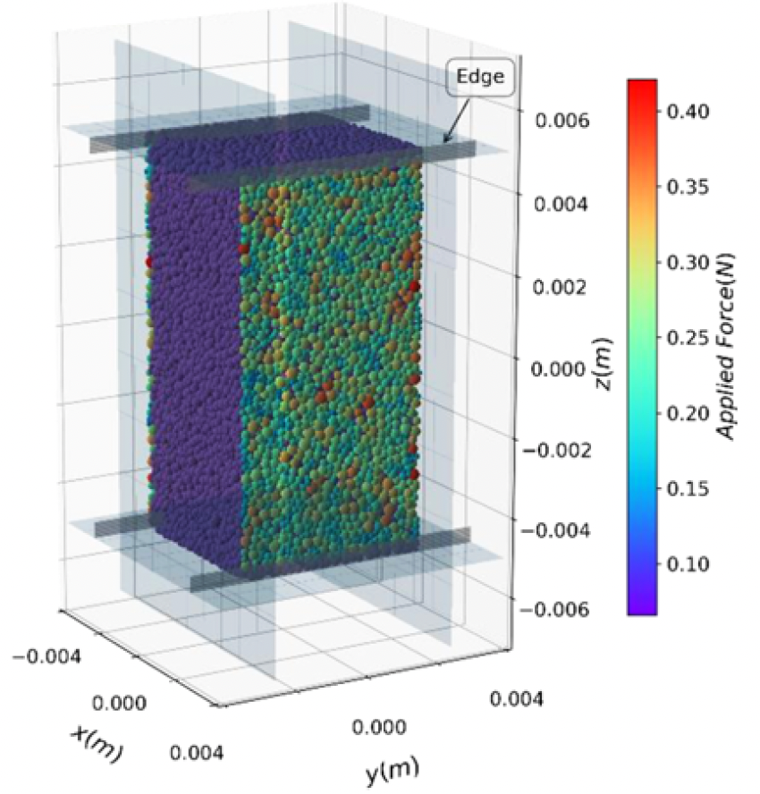
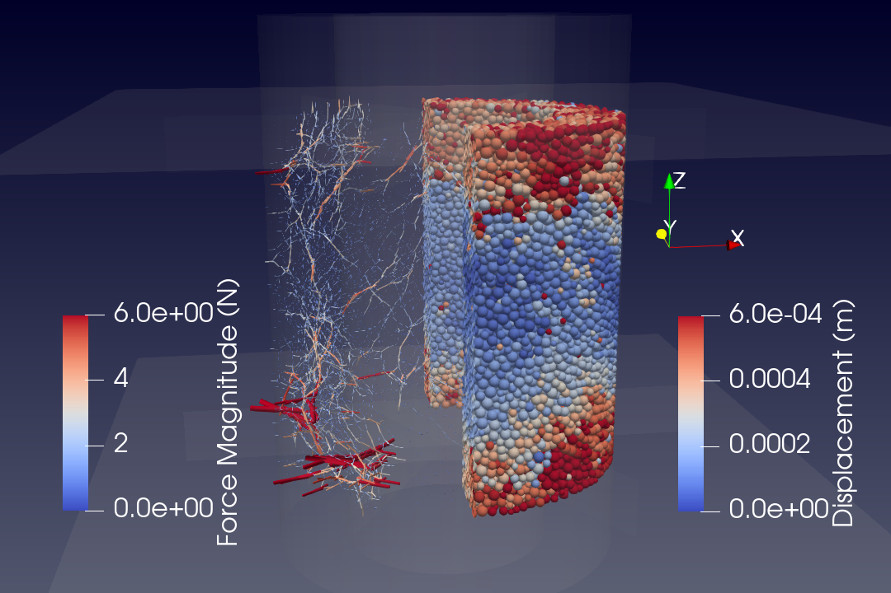
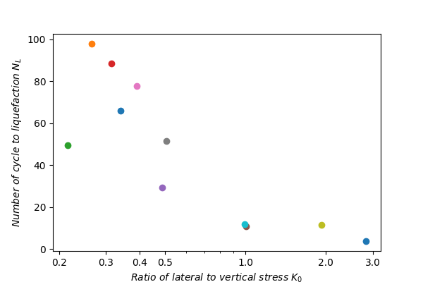
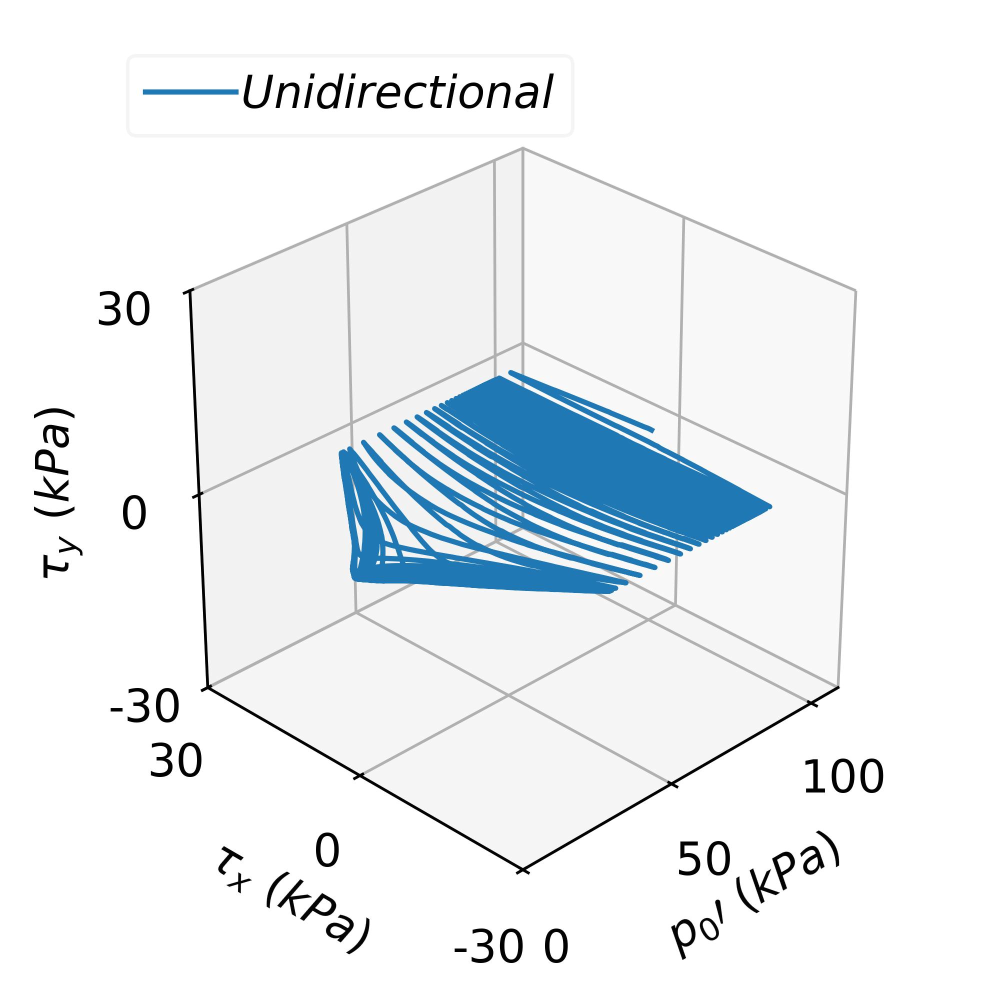
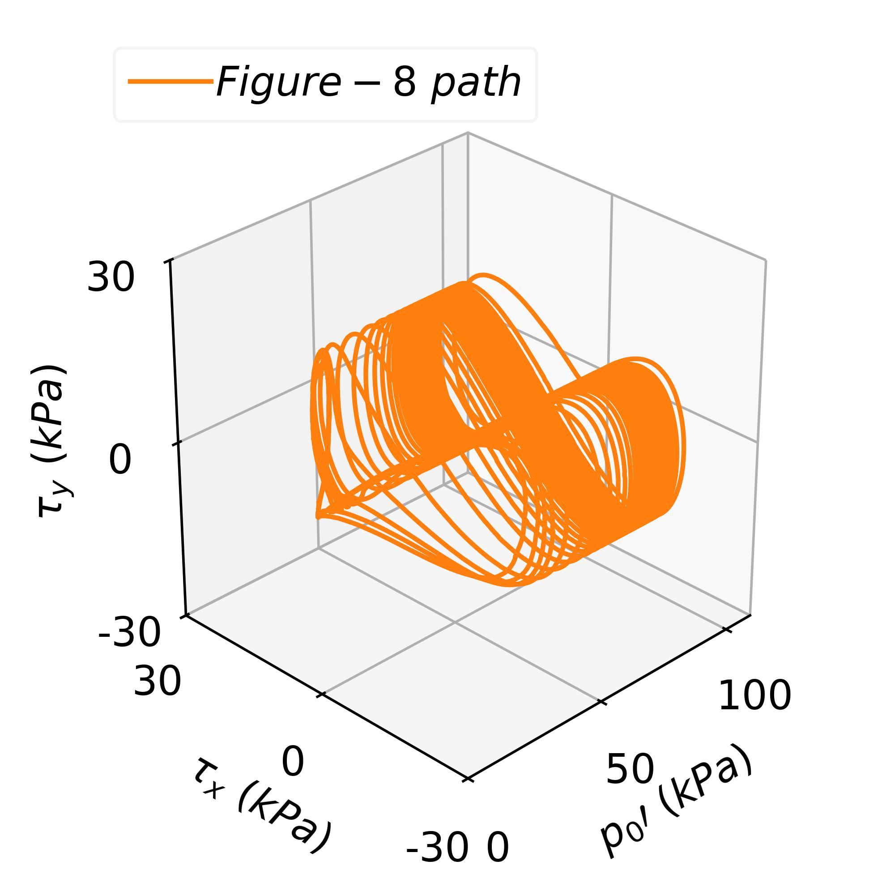
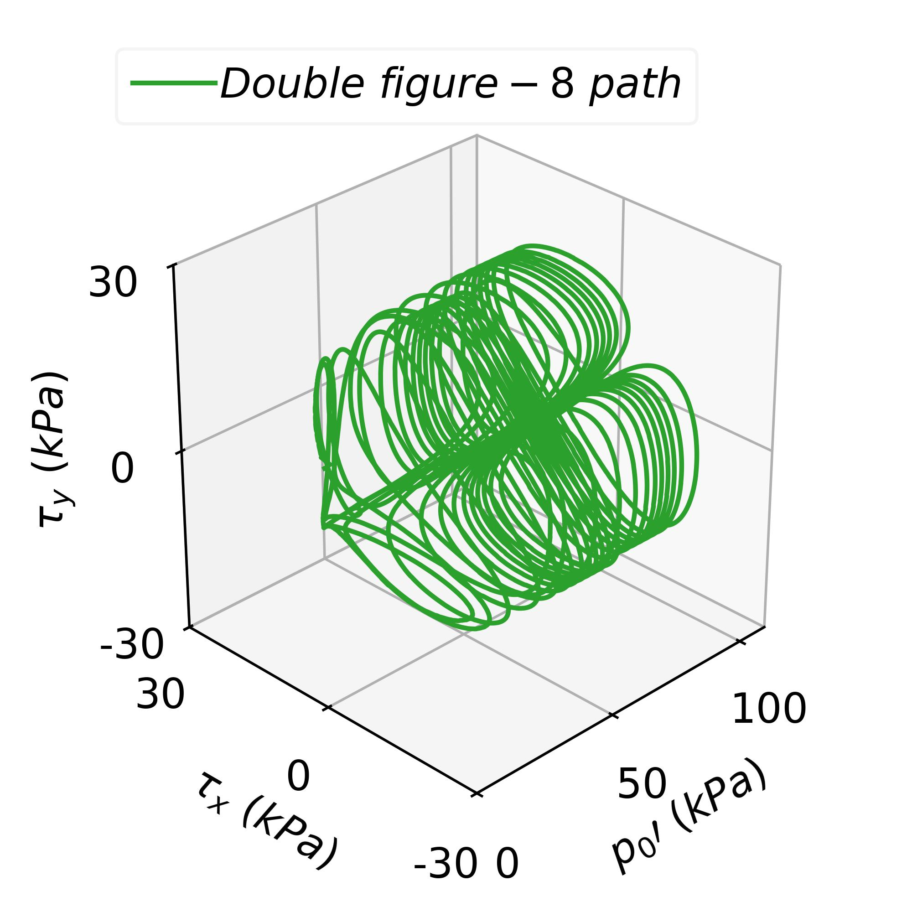

Research
From particle contacts to earthquake response
My research traces a single thread: understanding why soil loses strength during earthquakes, at the scale of individual particle contacts. Along the way, I developed new simulation methods, validated them experimentally, and built AI tools to accelerate the entire workflow.

Microscopic Fabric Analysis
Investigated fabric evolution in granular soils through true triaxial DEM simulations under general stress conditions, including various stress paths and Lode angles.

DEM-Based HCA Simulation
Developed a coupled analytical servo mechanism that simultaneously satisfies undrained conditions and complex stress states in hollow cylinder apparatus simulations, enabling DEM-based cyclic torsional shear under arbitrary stress conditions.

Experimental Validation
Conducted 16 undrained cyclic torsional shear tests on Toyoura sand using a hollow cylinder apparatus across K0 = 0.20–3.0. Validated the DEM-predicted non-monotonic relationship between K0 and liquefaction resistance with physical evidence.



Multi-Directional Seismic Loading
Proposed the double-8 loading path to quantitatively isolate multi-directional shear effects on liquefaction, maintaining equal shear stress magnitudes across different loading patterns.
Expertise
Technical stack
Featured Project
pfc-mcp
An open-source Model Context Protocol server that brings LLM-powered workflows to ITASCA PFC. Born from years of working with PFC's domain-specific command language, this tool solves a real pain point: bridging the gap between modern AI assistants and specialized numerical simulation software.
MCP Client
pfc-mcp
PFC Bridge
PFC GUI
PFC uses a specialized command syntax poorly represented in LLM training data. This server provides structured, verified documentation — eliminating hallucination and enabling reliable AI-assisted simulation workflows.
Publications
Selected papers
DEM Analysis of Fabric Evolution and Behavior of Granular Geomaterials in True Triaxial Test with Flexible Boundary
KSCE Journal of Civil Engineering, 27, 3341–3354 (2023). DOI
An approach to DEM simulation of hollow torsional shear tests for achieving general loading paths
Computers and Geotechnics, 172, 106402 (2024). DOI
Open Source
Projects
GPU-accelerated DEM engine built with TaichiLang. Linear contact model, neighbor search, and boundary handling from scratch.
Offline particle renderer with reflection, refraction, and lighting. High-fidelity DEM visualization without Paraview.
AI agent platform for PFC simulations. Multi-provider LLM, real-time WebSocket bridge to ITASCA PFC, React frontend.
MCP server for PFC workflows. Documentation browsing, command search, and task execution via any MCP-compatible client.